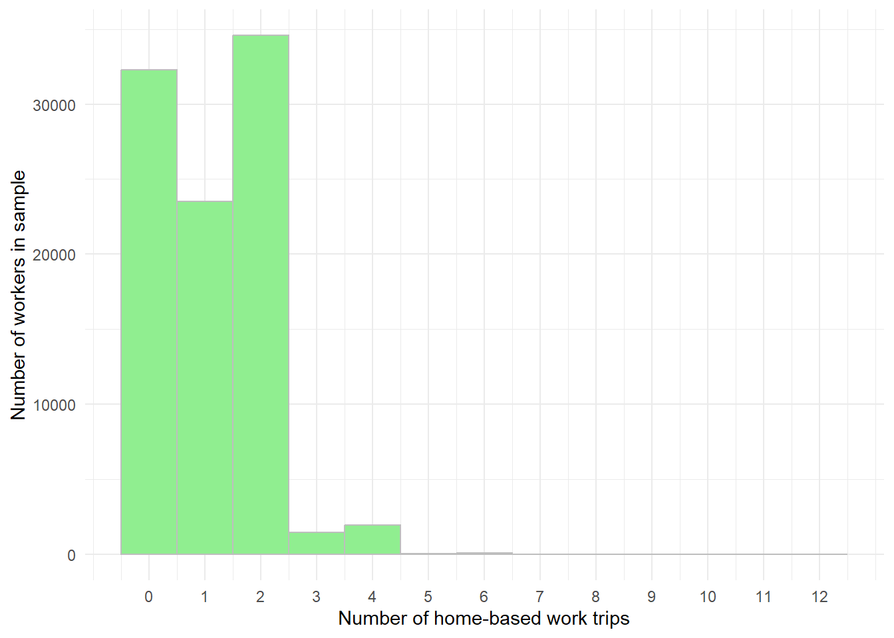
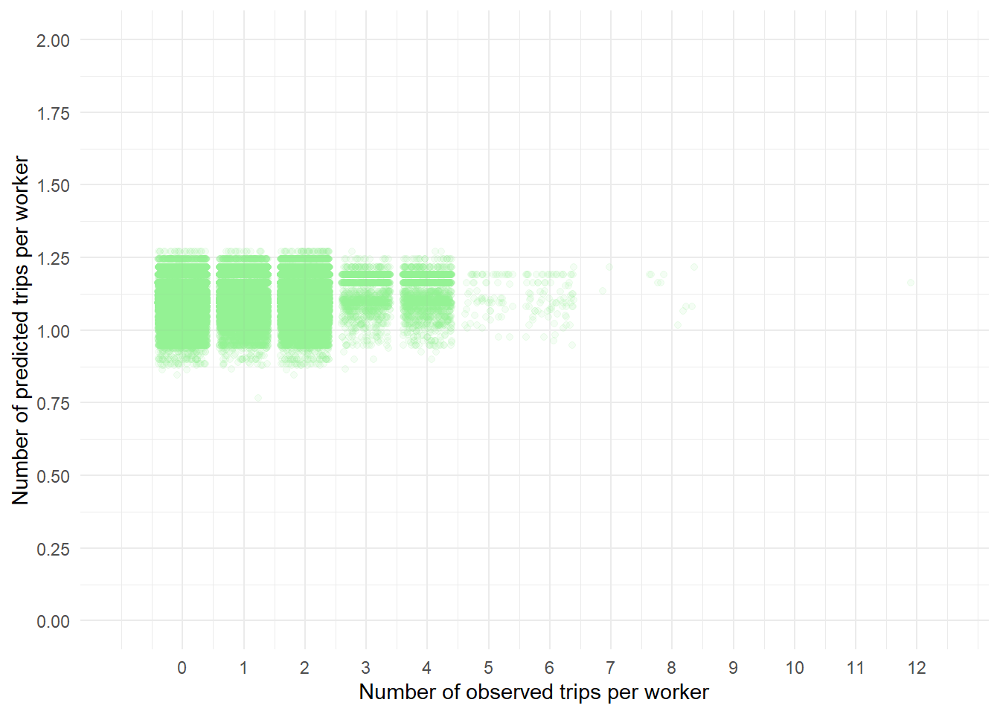
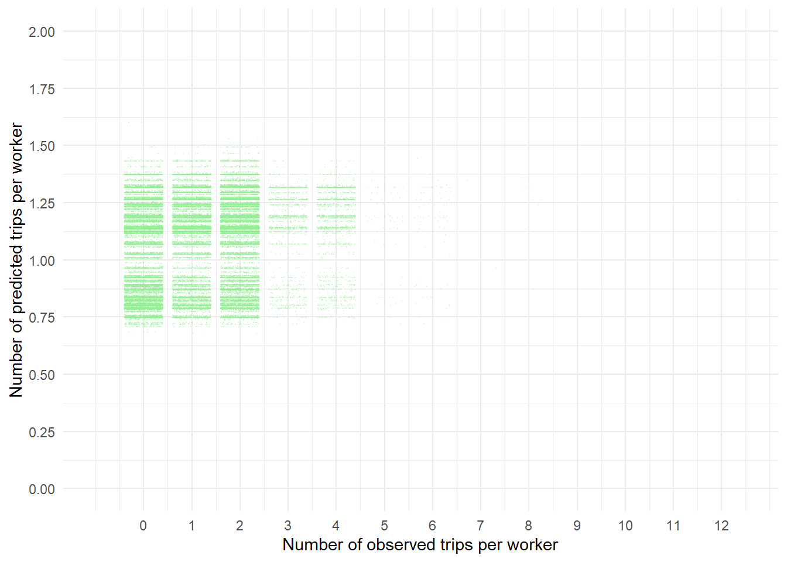
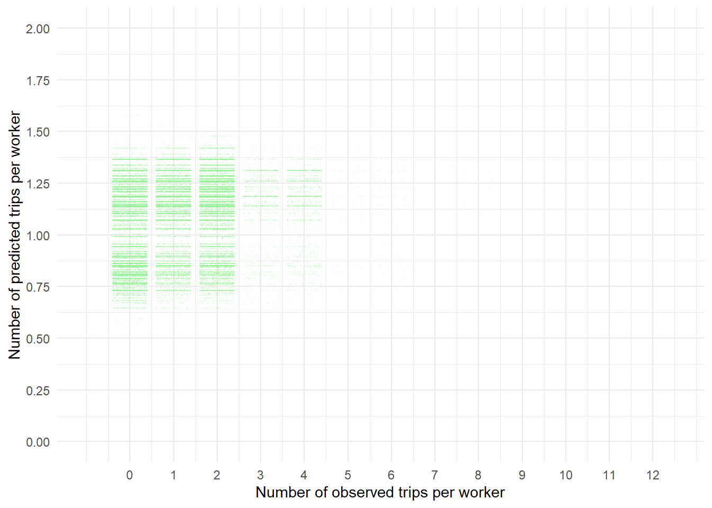

library(tidyverse)
library(here)
library(knitr)
library(srvyr)
library(mlogit)
library(caret)
library(pscl)
here("code",
"mlogit_helpers.R") |>
source()P3: Trip Generation
The purpose of this assignment is for you to get some experience estimating and interpreting regression models for count data by
Reading the documentation for the trip generation submodel of the Boston Region Metropolitan Planning Organization’s regional travel demand model (TDM23),
Estimating one or more trip generation models for a trip purpose that is not represented in TDM23.
Interpreting the model results to explain the influence that household and built-environment characteristics have on trip generation for the trip purpose you have selected.
Load libraries
This analysis uses the following packages:
Load datasets
This analysis uses household-level, person-level, and trip-level data from the 2017 National Household Travel Survey. Keep in mind that TDM23 is meant to represent travel on a “typical weekday”, so for comparison purposes, we’ll filter our data to only include participants who completed their travel diary on a weekday.
hh_data <- here("data",
"NHTS",
"hhpub.csv") |>
read_csv(show_col_types = FALSE) |>
filter(TRAVDAY != "01",
TRAVDAY != "07")
person_data <- here("data",
"NHTS",
"perpub.csv") |>
read_csv(show_col_types = FALSE) |>
filter(TRAVDAY != "01",
TRAVDAY != "07")
trip_data <- here("data",
"NHTS",
"trippub.csv") |>
read_csv(show_col_types = FALSE) |>
filter(TRAVDAY != "01",
TRAVDAY != "07") |>
select(HOUSEID,
PERSONID,
TDTRPNUM,
TRIPPURP,
WHYFROM,
WHYTO,
TRPTRANS,
R_AGE,
EDUC,
WTTRDFIN)Examine trip purposes
Refer to the TDM23 Structures and Performance report (https://ctps.org/pub/tdm23_sc/tdm23.1.0/TDM23_Structures%20and%20Performance.pdf) for details on the trip generation sub-model of the TDM23 model (beginning on page 73).
TDM23 includes two worker-level trip production models, one for each of two trip purposes:
Home-based work trips are what you would typically think of as commute trips: trips between a person’s home and their place of work.
Non-home-based work trips are trips that begin or end at a person’s place of work, but neither begin nor end at that person’s home.
TDM23 also includes four household-level trip production models, one for each of four trip purposes:
Home-based personal business: see Table 30 of the Structures and Performance Report (page 74)
Home-based school: see Table 30 of the Structures and Performance Report (page 74) (note that university trips are handled in a separate submodel entirely).
Home-based social/recreation: see Table 30 of the Structures and Performance Report (page 74)
Non-home-based non-work trips are trips that do not have the home or the work place as a trip end.
How common is each of these trip purposes? The trips data set has two variables that you can use to construct a trip purpose variable that aligns with the above:
WHYTO: What was the primary activity at the trip destination
WHYFROM: What was the primary activity at the trip origin.
You can see the codes for the all possible activities here in the online codebook (these are the codes for WHYTO, but they are the same for WHYFROM): https://nhts.ornl.gov/tables09/CodebookPage.aspx?id=1375
You may notice that the trips data also has a trip-purpose variable with the following categories:
HBO (Home-based other)
HBSHOP (Home-based shopping)
HBSOCREC (Home-based social recreation)
HBW (Home-based work)
NHB (non-home-based)
These are slightly different than the categories TDM23 uses, so we’ll construct our own trip purpose variable that better aligns with TDM23.
Link up unlinked trips
One of the origin/destination purposes that can be specified is to change to another type of transportation. For example, here is a the full set of travel-day trips for one individual:
trip_data |>
filter(HOUSEID == "40173222" & PERSONID == "03") |>
kable()| HOUSEID | PERSONID | TDTRPNUM | TRIPPURP | WHYFROM | WHYTO | TRPTRANS | R_AGE | EDUC | WTTRDFIN |
|---|---|---|---|---|---|---|---|---|---|
| 40173222 | 03 | 01 | HBO | 01 | 08 | 03 | 20 | 02 | 424376.1 |
| 40173222 | 03 | 02 | NHB | 08 | 07 | 11 | 20 | 02 | 424376.1 |
| 40173222 | 03 | 03 | HBO | 07 | 01 | 03 | 20 | 02 | 424376.1 |
This person made three trips on the travel day:
Trip 1 was a trip by car (
03) from home (01) to school (08).Trip 2 was a trip by bus (
11) from school (08) to change transportation modes (07).Trip 3 was a trip by car (
03) from changing transportation modes (07) to home (01).
For our analysis, it will be better to treat trips 2 and 3 above as a single trip from school to home, so we’ll link trips like this together. Here’s an easy-ish approach to do that. It would be a little trickier if we wanted to keep track of all the modes that were used on the trip (which we don’t need to do for this assignment, but we will need to do on a subsequent assignment).
trip_data <- trip_data |>
mutate(transfer_trip = WHYTO == "07" | WHYFROM == "07")
transfer_trips <- trip_data |>
filter(transfer_trip) |>
filter(WHYTO != WHYFROM) # remove trips that begin AND end with a transfer
next_destination <- c(transfer_trips$WHYTO[2:nrow(transfer_trips)], "last")
transfer_trips <- transfer_trips |>
mutate(next_destination = next_destination) |>
mutate(WHYTO = ifelse(WHYTO == "07", next_destination, WHYTO)) |>
filter(WHYFROM != "07") |>
select(-next_destination)
trip_data <- trip_data |>
filter(!transfer_trip) |>
rbind(transfer_trips) |>
select(-TRIPPURP, -TRPTRANS, -transfer_trip)Now we can check back in on our friend who took the bus and the car home from school:
trip_data |>
filter(HOUSEID == "40173222" & PERSONID == "03") |>
kable()| HOUSEID | PERSONID | TDTRPNUM | WHYFROM | WHYTO | R_AGE | EDUC | WTTRDFIN |
|---|---|---|---|---|---|---|---|
| 40173222 | 03 | 01 | 01 | 08 | 20 | 02 | 424376.1 |
| 40173222 | 03 | 02 | 08 | 01 | 20 | 02 | 424376.1 |
And we can see that the trip home from school has been combined into a single trip.
Construct trip purposes
Now we can start constructing our trip purpose variable that’s consistent with TDM23.
home <- c("01", "02")
work <- c("03", "04", "05")
per_bus <- c("06", "11", "12", "14", "18")
soc_rec <- c("10", "13", "15", "16", "17", "19")
school <- c("08", "09")
lt_hs_grad <- c("-1", "-7", "-8", "01")
trip_data <- trip_data |>
mutate(purpose = case_when(WHYTO %in% home & WHYFROM %in% work ~ "HBW",
WHYTO %in% work & WHYFROM %in% home ~ "HBW",
WHYTO %in% work | WHYFROM %in% work ~ "NHBW",
WHYTO %in% home & WHYFROM %in% per_bus ~ "HBPB",
WHYTO %in% per_bus & WHYFROM %in% home ~ "HBPB",
WHYTO %in% home & WHYFROM %in% soc_rec ~ "HBSR",
WHYTO %in% soc_rec & WHYFROM %in% home ~ "HBSR",
WHYTO %in% home &
WHYFROM %in% school &
EDUC %in% lt_hs_grad &
R_AGE < 21 ~ "HBSC",
WHYTO %in% school &
WHYFROM %in% home &
EDUC %in% lt_hs_grad &
R_AGE < 21 ~ "HBSC",
WHYTO %in% home &
WHYFROM %in% school ~ "HBU",
WHYTO %in% school &
WHYFROM %in% home ~ "HBU",
WHYTO %in% home | WHYFROM %in% home ~ "HBO",
TRUE ~ "NHBNW"))Summarize trip purposes
Now we can summarize the number of trips in our sample that are categorized into each trip purpose.
trip_data |>
group_by(purpose) |>
summarise(`Number of trips (unweighted)` = n()) |>
mutate(`Percent of trips (unweighted)` =
100 * `Number of trips (unweighted)`/
sum(`Number of trips (unweighted)`)) |>
arrange(desc(`Percent of trips (unweighted)`)) |>
kable(format.args = list(big.mark = ","), digits = 0)| purpose | Number of trips (unweighted) | Percent of trips (unweighted) |
|---|---|---|
| HBPB | 181,115 | 25 |
| NHBNW | 156,946 | 22 |
| HBSR | 135,063 | 19 |
| HBW | 116,174 | 16 |
| NHBW | 86,540 | 12 |
| HBSC | 28,700 | 4 |
| HBO | 19,540 | 3 |
| HBU | 5,762 | 1 |
And here are the estimated numbers of trips in the full population (incorporating survey weights).
trip_data |>
as_survey_design(weights = WTTRDFIN) |>
group_by(purpose) |>
survey_tally() |>
mutate(`Percent of trips (weighted)` = 100*n / sum(n)) |>
rename(`Number of trips (weighted)` = n) |>
select(purpose,
`Number of trips (weighted)`,
`Percent of trips (weighted)`) |>
arrange(desc(`Percent of trips (weighted)`)) |>
kable(format.args = list(big.mark = ","), digits = 0)| purpose | Number of trips (weighted) | Percent of trips (weighted) |
|---|---|---|
| HBPB | 64,698,488,450 | 24 |
| NHBNW | 52,124,859,397 | 19 |
| HBW | 47,111,751,625 | 17 |
| HBSR | 47,018,631,394 | 17 |
| NHBW | 33,262,649,444 | 12 |
| HBSC | 15,654,656,480 | 6 |
| HBO | 6,464,175,831 | 2 |
| HBU | 3,533,624,475 | 1 |
You can see that home-based personal business trips are the most common trip purpose, followed by non-home-based non-work trips. The next two most common trip purposes are home-based work trips and home-based social/recreational trips (and the weighting effects the relative ranks of those). Home-based work trips represent less than 20 percent of all trips, which should give us pause when we consider the emphasis that transportation planners have historically placed on the commute trip.
For this assignment, you should select (or define) a trip purpose that is not included in TDM23. You don’t need to limit your analysis to weekdays (and in fact, you could limit it to weekends if you want to). You can do an analysis at the household level or at the individual level. If you want, your selected trip purpose can be broader than any in TDM23 (e.g. “all trips”) or more narrow (e.g. health care trips). You can also limit your analysis to a particular population (e.g. seniors or households with children). Keep in mind that if you want to learn something about what makes the travel behavior of a particular population unique, you should not limit your analysis to that population. Better to include a broader population in your sample and include a variable to represent the effect of being in your population of interest.
For the rest of this example, I will focus on home-based work trips (as defined in TDM23), and I will construct an initial model that follows the approach used for TDM23.
Select and construct predictor variables
TDM23 predicts the number of home-based work trips (at the worker level) using four predictors:
Number of household seniors
Number of household workers
Household vehicle availability category
Household income category
All of these were also included in the vehicle availability model, and we can construct them at the household level the same way we did for the vehicle availability assignment.
n_seniors <- person_data |>
mutate(is_senior = R_AGE > 64) |>
group_by(HOUSEID) |>
summarise(n_seniors = sum(is_senior))
hh_data <- hh_data |>
mutate(veh_avail = case_when(HHVEHCNT == 0 ~ "Zero",
DRVRCNT > HHVEHCNT ~ "Insuff.",
TRUE ~ "Suff.")) |>
mutate(HHFAMINC = as.numeric(HHFAMINC)) |>
filter(HHFAMINC > 0) |>
mutate(income = case_when(HHFAMINC < 4 ~ "low",
HHFAMINC < 5 & HHSIZE > 1 ~ "low",
HHFAMINC < 6 & HHSIZE > 3 ~ "low",
HHFAMINC < 7 & HHSIZE > 5 ~ "low",
HHFAMINC < 8 & HHSIZE > 7 ~ "low",
HHFAMINC > 8 ~ "high",
TRUE ~ "middle")) |>
mutate(income = factor(income, levels = c("low", "middle", "high"))) |>
left_join(n_seniors) |>
select(HOUSEID,
HHSIZE,
WRKCOUNT,
n_seniors,
veh_avail,
income)It’s interesting that, even though the home-based-work trip generation model is applied at the level of the individual worker, it does not include any individual-level variables (like age, gender, or race). I’ll add a couple individual level variables like to my worker-level dataset in case I want to include them in an alternative model.
workers <- person_data |>
filter(WORKER == "01") |>
select(HOUSEID, PERSONID, R_SEX, WKFTPT, R_RACE, R_AGE) |>
mutate(WKFTPT = as.numeric(WKFTPT)) |>
filter(WKFTPT > 0) |>
mutate(female = R_SEX == "02") |>
mutate(part_time = WKFTPT == 2) |>
inner_join(hh_data)And now I’ll count the number of home-based work trips and add that to my worker dataset.
hbw_trips <- trip_data |>
filter(purpose == "HBW") |>
group_by(HOUSEID, PERSONID) |>
summarise(hbw_trips = n())
workers <- workers |>
left_join(hbw_trips) |>
replace_na(list(hbw_trips = 0)) |>
mutate(income = factor(income, levels = c("low", "middle", "high")))Data visualization
Let’s take a look at the distribution of trip counts for each of these trip purposes. Here is the histogram for home-based work trips
ggplot(workers) +
geom_histogram(aes(x = hbw_trips),
binwidth = 1,
color = "gray",
fill = "lightgreen") +
scale_x_continuous(name = "Number of home-based work trips",
breaks = seq(0, 12, by=1)) +
scale_y_continuous(name = "Number of workers in sample") +
theme_minimal()
This is not a normal distributions, which may suggest that a linear regression model is not going to be the most appropriate.
Trip counts are an example of count data - values that represent counts of things. Count data commonly follow a poisson distribution or a negative binomial distribution. The main difference between a poisson distribution and a negative binomal distribution is that, in a poisson distribution, the standard deviation will be approximately equal to the mean, and in a negative binomial distribution, the standard deviation might be much greater than the mean (e.g. the data may be over-dispersed for a Poisson distribution). Let’s check the standard deviations and means of out two trip count variables.
workers |>
summarise(`Average count of HBW trips` = mean(hbw_trips),
`Standard deviation` = sd(hbw_trips)) |>
kable(digits = 3)| Average count of HBW trips | Standard deviation |
|---|---|
| 1.126 | 0.993 |
For home-based work trips, the mean and standard deviation are both about one, so a poisson regression might be appropriate.
Estimate models
I’m going to demonstrate the following types of models:
Linear regression
Poisson regression
Zero-inflated Poisson regression
Discrete choice (review)
Linear regression
TDM is using a linear regression model, so we’ll start with that approach.
Here is a linear model predicting home-based work trips based on the variables that are included in the TDM23 model.
hbw_model_1 <- lm(hbw_trips ~ n_seniors + WRKCOUNT + veh_avail + income,
data = workers)
summary(hbw_model_1)
Call:
lm(formula = hbw_trips ~ n_seniors + WRKCOUNT + veh_avail + income,
data = workers)
Residuals:
Min 1Q Median 3Q Max
-1.2711 -1.0885 -0.1044 0.8366 10.8366
Coefficients:
Estimate Std. Error t value Pr(>|t|)
(Intercept) 0.990440 0.016018 61.833 < 2e-16 ***
n_seniors -0.059009 0.005896 -10.009 < 2e-16 ***
WRKCOUNT 0.026915 0.004465 6.027 1.67e-09 ***
veh_availSuff. 0.064237 0.012049 5.331 9.77e-08 ***
veh_availZero -0.020960 0.027267 -0.769 0.442
incomemiddle 0.081824 0.009175 8.918 < 2e-16 ***
incomehigh -0.014867 0.010428 -1.426 0.154
---
Signif. codes: 0 '***' 0.001 '**' 0.01 '*' 0.05 '.' 0.1 ' ' 1
Residual standard error: 0.9909 on 93934 degrees of freedom
Multiple R-squared: 0.00402, Adjusted R-squared: 0.003956
F-statistic: 63.19 on 6 and 93934 DF, p-value: < 2.2e-16Let’s compare this result to the model parameters in TDM23.
tibble(Variable = c("Constant",
"Number of household seniors",
"Number of household workers",
"Sufficient vehicle household",
"Zero vehicle household",
"Middle income",
"High income"),
`Linear model` = hbw_model_1$coefficients,
`p-value` = summary(hbw_model_1)$coefficients[,4],
`TDM23 rate` = c(1.414,
-0.149,
-0.025,
0,
-0.093,
0.062,
0.062)) |>
kable(digits = 3)| Variable | Linear model | p-value | TDM23 rate |
|---|---|---|---|
| Constant | 0.990 | 0.000 | 1.414 |
| Number of household seniors | -0.059 | 0.000 | -0.149 |
| Number of household workers | 0.027 | 0.000 | -0.025 |
| Sufficient vehicle household | 0.064 | 0.000 | 0.000 |
| Zero vehicle household | -0.021 | 0.442 | -0.093 |
| Middle income | 0.082 | 0.000 | 0.062 |
| High income | -0.015 | 0.154 | 0.062 |
The two models have a few things in common:
Both the NHTS model and the TDM23 model would predict that a worker in a low-income household with zero seniors, zero workers, and fewer cars than drivers would make one HBW trip on a typical day.
Both models predict that a worker in a household with more seniors would make fewer work trips (about a tenth of a trip fewer for each senior).
Both models predict about a tenth of a trip more for middle-income households than for low-income households.
There are also some noteworthy differences:
The NHTS model predicts that workers in households with more workers will make more HBW trips. The TDM23 model predicts that opposite: that workers in households with more workers will make fewer HBW trips.
The NHTS model predicts that workers in households with sufficient vehicles will make more HBW trips than those in households with insufficient vehicles. The TDM23 model predicts that there will be no difference in the number of HBW trips by workers from these two household types.
The NHTS model finds no significant difference in the number of HBW trips based on whether a household has insufficient vehicles or zero vehicles. The TDM23 model predicts that zero-vehicle households will make fewer HBW trips than insufficient vehicle households.
The NHTS model predicts that high-income households will make about the same number of HBW trips as low-income households, but that middle-income households will make more HBW trips than either high- or low-income households. The TDM23 model predicts that both middle-income and high-income households will make more HBW trips than low-income households.
It’s worth noting that both the linear NHTS model and the TDM model will generate less variation in their predictions for the NHTS data than we see in our observed values for the NHTS data.
Let’s take a look at the range of values in each of our predictors.
workers |>
summarise(`Minimum seniors` = min(n_seniors),
`Maximum seniors` = max(n_seniors),
`Minimum workers` = min(WRKCOUNT),
`Maximum workers` = max(WRKCOUNT)) |>
t() |>
kable()| Minimum seniors | 0 |
| Maximum seniors | 4 |
| Minimum workers | 1 |
| Maximum workers | 7 |
The lowest number of home-based work trips that the NHTS model could theoretically predict with these ranges of variables would be about 0.8 trips (which we could round to one) for a worker in a zero-vehicle (or insufficient vehicle), high-income (or low-income) household with four seniors and one worker. The highest number of home-based work trips it could predict would be 1.32 trips (which we could also round to one) for a middle-income, sufficient-vehicle household with no seniors and seven workers.
The lowest number of home-based work trips that the TDM23 model could theoretically predict with these ranges of variables would be about 0.55 trips (which we could round to one) for a worker in a zero-vehicle, low-income household with four seniors and seven workers. The highest number of home-based work trips it could predict would be 1.45 trips (which we could also round to one) for a middle-income (or high-income), sufficient-vehicle (or insufficient-vehicle) household with no seniors and one worker.
Keep in mind that most workers in the NHTS dataset made either zero or two HBW trips on the survey day.
workers |>
group_by(hbw_trips) |>
summarise(`Number of workers` = n()) |>
mutate(`Percent of workers` =
100*`Number of workers` / sum(`Number of workers`)) |>
kable(digits = 0)| hbw_trips | Number of workers | Percent of workers |
|---|---|---|
| 0 | 32295 | 34 |
| 1 | 23497 | 25 |
| 2 | 34573 | 37 |
| 3 | 1469 | 2 |
| 4 | 1942 | 2 |
| 5 | 68 | 0 |
| 6 | 84 | 0 |
| 7 | 2 | 0 |
| 8 | 10 | 0 |
| 12 | 1 | 0 |
Here is a plot comparing the predicted values from the NHTS model to the observed values.
hbw_check_1 <- tibble(observed = hbw_model_1$model$hbw_trips,
predicted = hbw_model_1$fitted.values)
ggplot(hbw_check_1) +
geom_jitter(aes(x = observed,
y = predicted),
color = "lightgreen",
alpha = 0.1) +
scale_x_continuous(name = "Number of observed trips per worker",
limits = c(-1, 12.5),
breaks = seq(0, 12, by = 1)) +
scale_y_continuous(name = "Number of predicted trips per worker",
limits = c(0, 2),
breaks = seq(0, 2, by = 0.25)) +
theme_minimal()
We can also round the predicted values to a whole number of trips and generate a confusion matrix.
hbw_check_1 <- hbw_check_1 |>
mutate(observed_cat = case_when(observed == 0 ~ "Zero",
observed == 1 ~ "One",
observed == 2 ~ "Two",
TRUE ~ "Three_plus"),
predicted_cat = case_when(round(predicted) == 0 ~ "Zero",
round(predicted) == 1 ~ "One",
round(predicted) == 2 ~ "Two",
TRUE ~ "Three_plus")) |>
mutate(observed_cat = factor(observed_cat,
levels = c("Zero",
"One",
"Two",
"Three_plus")),
predicted_cat = factor(predicted_cat,
levels = c("Zero",
"One",
"Two",
"Three_plus")))
confusionMatrix(hbw_check_1$predicted_cat, hbw_check_1$observed_cat)Confusion Matrix and Statistics
Reference
Prediction Zero One Two Three_plus
Zero 0 0 0 0
One 32295 23497 34573 3576
Two 0 0 0 0
Three_plus 0 0 0 0
Overall Statistics
Accuracy : 0.2501
95% CI : (0.2474, 0.2529)
No Information Rate : 0.368
P-Value [Acc > NIR] : 1
Kappa : 0
Mcnemar's Test P-Value : NA
Statistics by Class:
Class: Zero Class: One Class: Two Class: Three_plus
Sensitivity 0.0000 1.0000 0.000 0.00000
Specificity 1.0000 0.0000 1.000 1.00000
Pos Pred Value NaN 0.2501 NaN NaN
Neg Pred Value 0.6562 NaN 0.632 0.96193
Prevalence 0.3438 0.2501 0.368 0.03807
Detection Rate 0.0000 0.2501 0.000 0.00000
Detection Prevalence 0.0000 1.0000 0.000 0.00000
Balanced Accuracy 0.5000 0.5000 0.500 0.50000The model never predicts anything other than a value that is rounded to one, so the model accuracy is 25 percent (since 25 percent of our sample really did make one HBW trip).
Poisson regression
Poisson regression is useful for predicting count data (trip counts, in this case). Sometimes count data is “over-dispersed,” meaning the standard deviation is a lot greater than the mean. In those cases, it’s better to use a negative binomial regression. Let’s check the mean and standard deviation of workers’ home-based-work trip counts.
workers |>
summarise(mean_hbw_trips = mean(hbw_trips),
st_dev_hbw_trips = sd(hbw_trips)) |>
kable(digits = 3)| mean_hbw_trips | st_dev_hbw_trips |
|---|---|
| 1.126 | 0.993 |
The standard deviation is less than the mean, so a Poisson model would be fine. Let’s try a Poisson model, and let’s also try adding variables indicating for gender and for whether the worker works full- or part-time.
hbw_model_2 <- glm(hbw_trips ~
n_seniors +
WRKCOUNT +
veh_avail +
income +
female +
part_time,
data = workers,
family = "poisson")
summary(hbw_model_2)
Call:
glm(formula = hbw_trips ~ n_seniors + WRKCOUNT + veh_avail +
income + female + part_time, family = "poisson", data = workers)
Coefficients:
Estimate Std. Error z value Pr(>|z|)
(Intercept) 0.116286 0.015826 7.348 2.02e-13 ***
n_seniors 0.003855 0.005940 0.649 0.5164
WRKCOUNT 0.041945 0.004220 9.939 < 2e-16 ***
veh_availSuff. 0.056928 0.011729 4.854 1.21e-06 ***
veh_availZero 0.015820 0.027044 0.585 0.5586
incomemiddle 0.017863 0.008933 2.000 0.0455 *
incomehigh -0.089294 0.010241 -8.719 < 2e-16 ***
femaleTRUE -0.100738 0.006228 -16.175 < 2e-16 ***
part_timeTRUE -0.355233 0.008764 -40.535 < 2e-16 ***
---
Signif. codes: 0 '***' 0.001 '**' 0.01 '*' 0.05 '.' 0.1 ' ' 1
(Dispersion parameter for poisson family taken to be 1)
Null deviance: 105341 on 93940 degrees of freedom
Residual deviance: 102775 on 93932 degrees of freedom
AIC: 251483
Number of Fisher Scoring iterations: 5You’ll notice that this model doesn’t report an R-square value, but it does report an Akaike Information Criterion value (AIC), which is an alternative measure of model fit. We can compare this to the linear model (lower values are better).
AIC(hbw_model_1)[1] 264884So the revised model with an AIC score of 251483 offers a better fit.
We can also plot a comparison of observed values to predicted values.
hbw_check_2 <- tibble(observed = hbw_model_2$model$hbw_trips,
predicted = hbw_model_2$fitted.values)
ggplot(hbw_check_2) +
geom_jitter(aes(x = observed,
y = predicted),
color = "lightgreen",
alpha = 0.2,
size = 0.1) +
scale_x_continuous(name = "Number of observed trips per worker",
limits = c(-1, 12.5),
breaks = seq(0, 12, by = 1)) +
scale_y_continuous(name = "Number of predicted trips per worker",
limits = c(0, 2),
breaks = seq(0, 2, by = 0.25)) +
theme_minimal()
It does predict more variation, but the plot doesn’t show a clear pattern of predicting higher values for cases with higher observed values.
Does it do better at identifying cases that make more or fewer than one trip?
hbw_check_2 <- hbw_check_2 |>
mutate(observed_cat = case_when(observed == 0 ~ "Zero",
observed == 1 ~ "One",
observed == 2 ~ "Two",
TRUE ~ "Three_plus"),
predicted_cat = case_when(round(predicted) == 0 ~ "Zero",
round(predicted) == 1 ~ "One",
round(predicted) == 2 ~ "Two",
TRUE ~ "Three_plus")) |>
mutate(observed_cat = factor(observed_cat,
levels = c("Zero",
"One",
"Two",
"Three_plus")),
predicted_cat = factor(predicted_cat,
levels = c("Zero",
"One",
"Two",
"Three_plus")))
confusionMatrix(hbw_check_2$predicted_cat, hbw_check_1$observed_cat)Confusion Matrix and Statistics
Reference
Prediction Zero One Two Three_plus
Zero 0 0 0 0
One 32291 23496 34568 3576
Two 4 1 5 0
Three_plus 0 0 0 0
Overall Statistics
Accuracy : 0.2502
95% CI : (0.2474, 0.253)
No Information Rate : 0.368
P-Value [Acc > NIR] : 1
Kappa : 0
Mcnemar's Test P-Value : NA
Statistics by Class:
Class: Zero Class: One Class: Two Class: Three_plus
Sensitivity 0.0000 0.9999574 1.446e-04 0.00000
Specificity 1.0000 0.0001278 9.999e-01 1.00000
Pos Pred Value NaN 0.2501411 5.000e-01 NaN
Neg Pred Value 0.6562 0.9000000 6.320e-01 0.96193
Prevalence 0.3438 0.2501251 3.680e-01 0.03807
Detection Rate 0.0000 0.2501144 5.322e-05 0.00000
Detection Prevalence 0.0000 0.9998936 1.064e-04 0.00000
Balanced Accuracy 0.5000 0.5000426 5.000e-01 0.50000There are five cases with an observed value of two trips where the model predicts two trips, so the accuracy increases from 25.01 percent to 25.02 percent. Which is something, I guess.Let’s also see how the modeled relationship compare to our linear model and to the TDM23 model.
tibble(Variable = c("Constant",
"Number of household seniors",
"Number of household workers",
"Sufficient vehicle household",
"Zero vehicle household",
"Middle income",
"High income",
"Female",
"Part-time"),
`Poisson model` = hbw_model_2$coefficients,
`Poisson p-value` = summary(hbw_model_2)$coefficients[,4],
`Linear model` = c(hbw_model_1$coefficients,
NA, NA),
`Linear p-value` = c(summary(hbw_model_1)$coefficients[,4],
NA, NA),
`TDM23 model` = c(1.414,
-0.149,
-0.025,
0,
-0.093,
0.062,
0.062,
NA,
NA)) |>
kable(digits = 3)| Variable | Poisson model | Poisson p-value | Linear model | Linear p-value | TDM23 model |
|---|---|---|---|---|---|
| Constant | 0.116 | 0.000 | 0.990 | 0.000 | 1.414 |
| Number of household seniors | 0.004 | 0.516 | -0.059 | 0.000 | -0.149 |
| Number of household workers | 0.042 | 0.000 | 0.027 | 0.000 | -0.025 |
| Sufficient vehicle household | 0.057 | 0.000 | 0.064 | 0.000 | 0.000 |
| Zero vehicle household | 0.016 | 0.559 | -0.021 | 0.442 | -0.093 |
| Middle income | 0.018 | 0.046 | 0.082 | 0.000 | 0.062 |
| High income | -0.089 | 0.000 | -0.015 | 0.154 | 0.062 |
| Female | -0.101 | 0.000 | NA | NA | NA |
| Part-time | -0.355 | 0.000 | NA | NA | NA |
In comparing the model coefficients, it doesn’t make sense to compare the magnitudes, since the Poisson regression transforms the outcome, but you can still compare the direction and significance of the coefficients. In general, the results of the Poisson regression are consistent with the results of the linear regression, including in cases where the linear regression suggests a different relationship than is used in the TDM model.
Both the Poisson model and our linear model suggest a positive relationship between the number of household workers and the number of home-based work trip by each worker. In contrast, the TDM23 model uses a negative relationship.
Both the Poisson model and our linear model suggest that sufficient-vehicle households make more home-based work trips than insufficient vehicle households. The TDM23 model does not include any difference between sufficient and insufficient vehicle households.
Neither the Poisson model nor or linear model shows a significant difference in the number of home-based work trips by workers in zero-vehicle-households and those in vehicle-insufficient households. The TDM23 model indicates that workers in zero-vehicle households make fewer home-based work trips than those in vehicle-insufficient households.
All three models show that workers in middle-income households make more home-based work trips than workers in low-income households. In the Poisson model, this effect is significant at a 95-percent confidence level, but not at a 99-percent confidence level (or even at a 96-percent confidence level).
One relationship in the Poisson model is different than what is suggested by both our linear model and the TDM23 model: While both the TDM23 model and our linear model show a negative relationship between the number of seniors in a household and the number of home-based work trips a worker in that household would make, the Poisson model does not find any significant relationship between the number of household seniors and the number of home-based work trips.
Finally, there are two relationships that were included in the Poisson model that were not included in the other two models:
The Poisson model finds that female workers are make fewer home-based work trips. This may be because female workers are more likely to “chain” their commute trips, for example, by running households errands on the way to or from work.
The Poisson model finds that part-time workers make fewer home-based work trips than full-time workers. This could also be an effect of part-time workers being more likely to chain their trips.
Note that the Structures and Performance Report indicates that differences in the number of home-based work trips per worker “is assumed to vary based on whether the worker is part or full time.” I’m not sure I understand this assumption, and I don’t think I agree with it, particularly since we still see differences when we control for full- and part-time work. My own thought is that variation is better explained by trip chaining and (perhaps) working from home.
Zero-inflated Poisson regression
Both models we’ve tried under-estimate the number of workers who made zero home-based work trips. We could try a zero-inflated model. A zero-inflated model estimates two models simultaneously: one for the likelihood that the outcome will be zero, and another for the value of the outcome, conditional on it not being zero. Here is how you would estimate a zero-inflated Poisson model with same set of predictors for the binomal part of the model (whether the worker made zero home-based work trips) and the Poisson part of the model (how many trips they made, if they made any).
hbw_model_3 <- zeroinfl(hbw_trips ~
n_seniors +
WRKCOUNT +
veh_avail +
income +
female +
part_time |
n_seniors +
WRKCOUNT +
veh_avail +
income +
female +
part_time,
data = workers,
dist = "poisson")
summary(hbw_model_3)
Call:
zeroinfl(formula = hbw_trips ~ n_seniors + WRKCOUNT + veh_avail + income +
female + part_time | n_seniors + WRKCOUNT + veh_avail + income +
female + part_time, data = workers, dist = "poisson")
Pearson residuals:
Min 1Q Median 3Q Max
-1.2571 -0.8143 -0.1303 0.7485 9.5630
Count model coefficients (poisson with log link):
Estimate Std. Error z value Pr(>|z|)
(Intercept) 0.116607 0.016653 7.002 2.52e-12 ***
n_seniors 0.019575 0.006416 3.051 0.002281 **
WRKCOUNT 0.039659 0.004428 8.956 < 2e-16 ***
veh_availSuff. 0.043786 0.012364 3.541 0.000398 ***
veh_availZero 0.009428 0.029156 0.323 0.746431
incomemiddle 0.031895 0.009579 3.330 0.000870 ***
incomehigh -0.069824 0.010851 -6.435 1.24e-10 ***
femaleTRUE -0.101727 0.006492 -15.669 < 2e-16 ***
part_timeTRUE 0.013052 0.011781 1.108 0.267923
Zero-inflation model coefficients (binomial with logit link):
Estimate Std. Error z value Pr(>|z|)
(Intercept) -17.770981 242.876354 -0.073 0.94167
n_seniors 0.148187 0.033731 4.393 1.12e-05 ***
WRKCOUNT -0.037052 0.031357 -1.182 0.23736
veh_availSuff. -0.222893 0.078629 -2.835 0.00459 **
veh_availZero -0.071362 0.168175 -0.424 0.67132
incomemiddle 0.160222 0.061033 2.625 0.00866 **
incomehigh 0.329181 0.077145 4.267 1.98e-05 ***
femaleTRUE 0.001115 0.049427 0.023 0.98200
part_timeTRUE 17.012866 242.876320 0.070 0.94416
---
Signif. codes: 0 '***' 0.001 '**' 0.01 '*' 0.05 '.' 0.1 ' ' 1
Number of iterations in BFGS optimization: 70
Log-likelihood: -1.249e+05 on 18 DfAIC(hbw_model_3)[1] 249915The AIC score is a little bit better than the Poisson model or the linear model.
Let’s compare the variable coefficients to those from the first Poisson regression.
tibble(Variable = c("Constant",
"Number of household seniors",
"Number of household workers",
"Sufficient vehicle household",
"Zero vehicle household",
"Middle income",
"High income",
"Female",
"Part-time"),
`Poisson model` = hbw_model_2$coefficients,
`Poisson p-value` = summary(hbw_model_2)$coefficients[,4],
`Zero-inf count` = hbw_model_3$coefficients$count,
`Zero-inf count p` = summary(hbw_model_3)$coefficients$count[,4],
`Zero-inf zero` = hbw_model_3$coefficients$zero,
`Zero-inf zero p` = summary(hbw_model_3)$coefficients$zero[,4]) |>
kable(digits = 3)| Variable | Poisson model | Poisson p-value | Zero-inf count | Zero-inf count p | Zero-inf zero | Zero-inf zero p |
|---|---|---|---|---|---|---|
| Constant | 0.116 | 0.000 | 0.117 | 0.000 | -17.771 | 0.942 |
| Number of household seniors | 0.004 | 0.516 | 0.020 | 0.002 | 0.148 | 0.000 |
| Number of household workers | 0.042 | 0.000 | 0.040 | 0.000 | -0.037 | 0.237 |
| Sufficient vehicle household | 0.057 | 0.000 | 0.044 | 0.000 | -0.223 | 0.005 |
| Zero vehicle household | 0.016 | 0.559 | 0.009 | 0.746 | -0.071 | 0.671 |
| Middle income | 0.018 | 0.046 | 0.032 | 0.001 | 0.160 | 0.009 |
| High income | -0.089 | 0.000 | -0.070 | 0.000 | 0.329 | 0.000 |
| Female | -0.101 | 0.000 | -0.102 | 0.000 | 0.001 | 0.982 |
| Part-time | -0.355 | 0.000 | 0.013 | 0.268 | 17.013 | 0.944 |
The zero-inflated model is mostly pretty consistent with the Poisson model.
The Poisson model shows that more household workers is associated with more HBW trips per worker. This is consistent with the zero-inflated Poisson model, which suggests that more household workers is also associated with a both a lower likelihood of making zero HBW trips, and a greater number of HBW trips among those who do make HBW trip.
Likewise, being in a vehicle-sufficient household is associates with a lower likelihood of making zero HBW trips and a greater number of HBW trips among those who make at least one. This is consistent with the result from the Poisson model which shows a positive relationship between vehicle sufficiency and the number of trips per worker.
Consistent with the results from the Poisson model, the zero-inflated model shows that, relative to being in a vehicle-insufficient household, being in a zero-vehicle household has no significant effect on either a worker’s likelihood of making no HBW trips or on the number of trips they make.
Consistent with the results from the Poisson model, the zero-inflated model shows that, relative to being in a low-income household, being in a high-income household is associate with a higher likelihood of making zero HBW trips and a lower number of HBW trips.
The differences between the Poisson model and the zero-inflated Poisson model also yield some interesting insights.
While the Poisson model shows not significant relationship between the number of household seniors and the number of HBW trips a worker will make, the zero-inflated Poisson model suggests that this may be because of two effects working in opposite directions: a higher number of household seniors is associated with both a greater likelihood of making zero HBW trips and more HBW trips among those workers who make any HBW trips.
Both the Poisson model and the zero-inflated Poisson model show that workers in middle-income households make more HBW trips than those in low-income households, but the zero-inflated Poisson model also shows that workers in middle-income households are more likely to make zero HBW trips.
Both the Poisson model and the zero-inflated Poisson model show that female workers make fewer home-based work trips than their male peers. However, the zero-inflated Poisson model does not indicate that there is any significant relationship between gender and the likelihood of making zero HBW trips.
The Poisson model shows that part-time workers make fewer HBW trips, but the zero-inflated Poisson model shows no significant relationship between full/part time worker status and either the number of HBW trips or the likelihood of making zero HBW trips.
We can also look at a plot of the predicted and observed values.
hbw_check_3 <- tibble(observed = hbw_model_3$model$hbw_trips,
predicted = hbw_model_3$fitted.values)
ggplot(hbw_check_3) +
geom_jitter(aes(x = observed,
y = predicted),
color = "lightgreen",
alpha = 0.1,
size = 0.1) +
scale_x_continuous(name = "Number of observed trips per worker",
limits = c(-1, 12.5),
breaks = seq(0, 12, by = 1)) +
scale_y_continuous(name = "Number of predicted trips per worker",
limits = c(0, 2),
breaks = seq(0, 2, by = 0.25)) +
theme_minimal()
And we can generate a confusion matrix. How do our rounded predictions compare to our observed model?
hbw_check_3 <- hbw_check_3 |>
mutate(observed_cat = case_when(observed == 0 ~ "Zero",
observed == 1 ~ "One",
observed == 2 ~ "Two",
TRUE ~ "Three_plus"),
predicted_cat = case_when(round(predicted) == 0 ~ "Zero",
round(predicted) == 1 ~ "One",
round(predicted) == 2 ~ "Two",
TRUE ~ "Three_plus")) |>
mutate(observed_cat = factor(observed_cat,
levels = c("Zero",
"One",
"Two",
"Three_plus")),
predicted_cat = factor(predicted_cat,
levels = c("Zero",
"One",
"Two",
"Three_plus")))
confusionMatrix(hbw_check_3$predicted_cat, hbw_check_3$observed_cat)Confusion Matrix and Statistics
Reference
Prediction Zero One Two Three_plus
Zero 0 0 0 0
One 32291 23496 34571 3576
Two 4 1 2 0
Three_plus 0 0 0 0
Overall Statistics
Accuracy : 0.2501
95% CI : (0.2474, 0.2529)
No Information Rate : 0.368
P-Value [Acc > NIR] : 1
Kappa : 0
Mcnemar's Test P-Value : NA
Statistics by Class:
Class: Zero Class: One Class: Two Class: Three_plus
Sensitivity 0.0000 1.000e+00 5.785e-05 0.00000
Specificity 1.0000 8.517e-05 9.999e-01 1.00000
Pos Pred Value NaN 2.501e-01 2.857e-01 NaN
Neg Pred Value 0.6562 8.571e-01 6.320e-01 0.96193
Prevalence 0.3438 2.501e-01 3.680e-01 0.03807
Detection Rate 0.0000 2.501e-01 2.129e-05 0.00000
Detection Prevalence 0.0000 9.999e-01 7.451e-05 0.00000
Balanced Accuracy 0.5000 5.000e-01 5.000e-01 0.50000Interestingly, even this zero-inflated model does not predict any cases with zero HBW trips. It correctly identifies two cases with two trips.
I should note that I’m overstating the problem with all of this focus on rounding. In the TDM23 model, we’re going to add app all the trips from all the households within a zone, and if we don’t round them all to a whole number of trips before aggregating them to the zone level, we’d still capture some of the variation due to income, vehicle availability, and the other factors.
Discrete-choice regression
Or, we could really lean into the rounding. Thinking about home-based work trips, we might divide workers into one of four categories:
Zero home-based work trips: This is either a worker who did not go to work that day, or who made intermediate stops on the way to work and on the way home (for example, to pick up and drop-off a child at school)
One home-based work trip: This is a worker who did go to work that day, and made an intermediate stop on the way to or from work (but not both).
Two home-based work trips: This is a worker who went directly from home to work, and then returned home directly at the end of the work shift.
Three or more home-based work trips: This some one whose time in the workplace(s) is fragmented across multiple shifts, with trips home in between them.
These might be categorically different rather than having a linear relationship with the predictors. We could try modeling this as a discrete-choice model.
workers <- workers |>
mutate(n_hbw_cat = case_when(hbw_trips == 0 ~ "Zero",
hbw_trips == 1 ~ "One",
hbw_trips == 2 ~ "Two",
TRUE ~ "Three_plus")) |>
mutate(full_id = paste(HOUSEID, PERSONID, sep = "_"))
workers_dfidx <- fn_make_dfidx(my_situation = workers,
my_id = "full_id",
my_alts = "n_hbw_cat")
hbw_model_4 <- mlogit(choice ~ 0 |
n_seniors +
WRKCOUNT +
veh_avail +
income +
female +
part_time | 0,
workers_dfidx,
reflevel = "Zero")
summary(hbw_model_4)
Call:
mlogit(formula = choice ~ 0 | n_seniors + WRKCOUNT + veh_avail +
income + female + part_time | 0, data = workers_dfidx, reflevel = "Zero",
method = "nr")
Frequencies of alternatives:choice
Zero One Three_plus Two
0.343780 0.250125 0.038066 0.368029
nr method
6 iterations, 0h:0m:12s
g'(-H)^-1g = 7.02E-08
gradient close to zero
Coefficients :
Estimate Std. Error z-value Pr(>|z|)
(Intercept):One -0.293734 0.044472 -6.6049 3.978e-11 ***
(Intercept):Three_plus -2.067190 0.090342 -22.8819 < 2.2e-16 ***
(Intercept):Two 0.032211 0.039425 0.8170 0.4139103
n_seniors:One -0.101499 0.016549 -6.1334 8.602e-10 ***
n_seniors:Three_plus 0.084264 0.031190 2.7016 0.0069006 **
n_seniors:Two -0.027119 0.014651 -1.8510 0.0641639 .
WRKCOUNT:One -0.016752 0.012355 -1.3559 0.1751407
WRKCOUNT:Three_plus 0.023621 0.024815 0.9519 0.3411616
WRKCOUNT:Two 0.140114 0.010879 12.8799 < 2.2e-16 ***
veh_availSuff.:One 0.216170 0.032889 6.5726 4.943e-11 ***
veh_availSuff.:Three_plus 0.228342 0.067914 3.3622 0.0007732 ***
veh_availSuff.:Two 0.161765 0.028828 5.6114 2.006e-08 ***
veh_availZero:One 0.180971 0.072913 2.4820 0.0130644 *
veh_availZero:Three_plus -0.383654 0.184557 -2.0788 0.0376376 *
veh_availZero:Two 0.168719 0.065636 2.5705 0.0101540 *
incomemiddle:One 0.123218 0.025095 4.9100 9.107e-07 ***
incomemiddle:Three_plus 0.074329 0.049458 1.5029 0.1328730
incomemiddle:Two 0.058552 0.022487 2.6038 0.0092194 **
incomehigh:One -0.071954 0.028522 -2.5228 0.0116437 *
incomehigh:Three_plus -0.474151 0.060051 -7.8958 2.887e-15 ***
incomehigh:Two -0.190655 0.025578 -7.4538 9.059e-14 ***
femaleTRUE:One -0.027626 0.017555 -1.5737 0.1155665
femaleTRUE:Three_plus -0.319642 0.035909 -8.9015 < 2.2e-16 ***
femaleTRUE:Two -0.256304 0.015939 -16.0804 < 2.2e-16 ***
part_timeTRUE:One -0.866980 0.022516 -38.5055 < 2.2e-16 ***
part_timeTRUE:Three_plus -0.700197 0.046522 -15.0509 < 2.2e-16 ***
part_timeTRUE:Two -0.941303 0.020179 -46.6469 < 2.2e-16 ***
---
Signif. codes: 0 '***' 0.001 '**' 0.01 '*' 0.05 '.' 0.1 ' ' 1
Log-Likelihood: -111170
McFadden R^2: 0.018698
Likelihood ratio test : chisq = 4236.8 (p.value = < 2.22e-16)Take a look at the above coefficients and think about the degree to which these results are consistent or inconsistent with the coefficients from the models with a continuous outcome.
Directly comparing the model fit between a discrete choice model and a model with a continuous predictor doesn’t make sense, since we’ve changed the outcome, but we can compare the accuracy based on confusion matrices.
hbw_result_4 <- tibble(id = hbw_model_4$model$idx$id,
alternative = hbw_model_4$model$idx$avail_choice,
choice = hbw_model_4$model$choice,
probability = hbw_model_4$model$probabilities)
observed_4 <- hbw_result_4 |>
filter(choice) |>
rename(observed_cat = alternative) |>
select(id, observed_cat)
predicted_4 <- hbw_result_4 |>
group_by(id) |>
mutate(predicted = probability == max(probability)) |>
ungroup() |>
filter(predicted) |>
rename(predicted_cat = alternative) |>
select(id, predicted_cat)
hbw_check_4 <- full_join(observed_4, predicted_4) |>
mutate(observed_cat = factor(observed_cat,
levels = c("Zero",
"One",
"Two",
"Three_plus")),
predicted_cat = factor(predicted_cat,
levels = c("Zero",
"One",
"Two",
"Three_plus")))Joining with `by = join_by(id)`confusionMatrix(hbw_check_4$predicted_cat, hbw_check_4$observed_cat)Confusion Matrix and Statistics
Reference
Prediction Zero One Two Three_plus
Zero 21020 19088 28358 2820
One 11275 4409 6215 756
Two 0 0 0 0
Three_plus 0 0 0 0
Overall Statistics
Accuracy : 0.2707
95% CI : (0.2679, 0.2735)
No Information Rate : 0.368
P-Value [Acc > NIR] : 1
Kappa : -0.0744
Mcnemar's Test P-Value : NA
Statistics by Class:
Class: Zero Class: One Class: Two Class: Three_plus
Sensitivity 0.6509 0.18764 0.000 0.00000
Specificity 0.1846 0.74099 1.000 1.00000
Pos Pred Value 0.2949 0.19461 NaN NaN
Neg Pred Value 0.5023 0.73223 0.632 0.96193
Prevalence 0.3438 0.25013 0.368 0.03807
Detection Rate 0.2238 0.04693 0.000 0.00000
Detection Prevalence 0.7588 0.24116 0.000 0.00000
Balanced Accuracy 0.4177 0.46431 0.500 0.50000The accuracy improves from 25 percent to 27 percent. This model is much better at identifying the zero-trip workers, but it also predicts way too many of them.